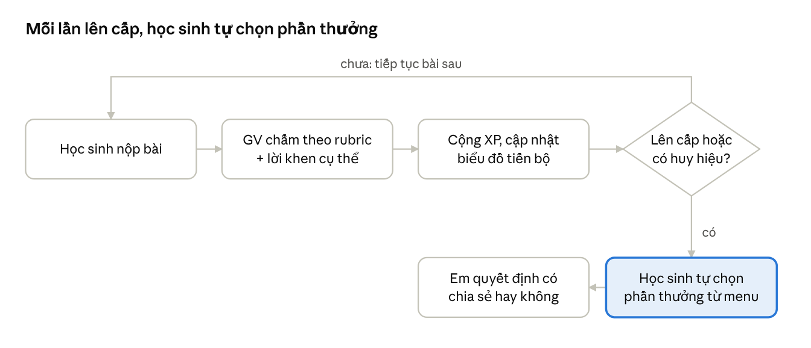
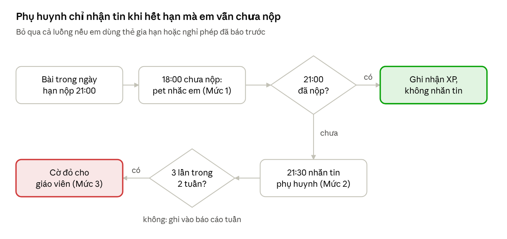

Khung khen thưởng học sinh teen
Tóm tắt: nghiên cứu nói gì về khen thưởng tuổi teen
Với tuổi teen, phần thưởng hiệu quả nhất là sự tôn trọng, quyền tự chủ và cảm giác tiến bộ thật sự — không phải quà vật chất hay bảng xếp hạng công khai. Khung dưới đây được xây từ 5 phát hiện chính:
Tuổi teen nhạy cảm với địa vị và sự tôn trọng. Từ khoảng 10 tuổi, não bộ bắt đầu khao khát sự ngưỡng mộ, niềm tự hào và rất sợ bị bẽ mặt (Yeager). Chương trình cho teen cơ hội "kiếm" được sự tôn trọng một cách tích cực hiệu quả hơn chương trình truyền thống.
Ba nhu cầu cốt lõi: tự chủ – năng lực – gắn kết (Thuyết Tự quyết định, Deci & Ryan). Học sinh được đáp ứng 3 nhu cầu này làm bài tập về nhà tự giác hơn; động lực bên ngoài đi kèm nguy cơ chép bài và kém bền bỉ.
Quà hữu hình hứa trước có thể làm giảm hứng thú tự thân, đặc biệt ở trẻ độ tuổi đi học (phân tích tổng hợp 128 nghiên cứu). Ngược lại, phần thưởng bất ngờ không gây tác hại này.
Khen "cố gắng" chung chung có thể phản tác dụng ở tuổi teen — các em có thể hiểu ngầm là "mình kém nên mới phải cố". Cần khen cách làm cụ thể (chiến lược, sự tiến bộ) chứ không chỉ khen chăm.
Bảng xếp hạng là công cụ gây tác dụng phụ nhiều nhất trong gamification: nó làm nản lòng học sinh đứng cuối bảng và hiệu ứng thường ngắn hạn. Điểm, huy hiệu, cấp độ vẫn hữu ích nếu thiết kế đúng.
Lưu ý: Project chưa có tài liệu nội bộ nào, nên các căn cứ trên lấy từ nghiên cứu công khai (xem mục Nguồn tham khảo).
Nguyên tắc thiết kế
Mọi phần thưởng trong hệ thống phải qua được 6 nguyên tắc sau.
| Nguyên tắc | Áp dụng trên website |
|---|---|
| Thưởng sự tiến bộ, không chỉ điểm số | Học sinh trung bình cải thiện 2 điểm cũng nhận thưởng ngang học sinh giỏi duy trì phong độ |
| So với chính mình, không so với bạn | Hiển thị "kỷ lục cá nhân", biểu đồ tiến bộ riêng; chỉ vinh danh nhóm dẫn đầu ở nhiều hạng mục, không xếp hạng toàn bộ lớp |
| Trao quyền chọn | Học sinh tự chọn phần thưởng, tự chọn thử thách, tự quyết định có công khai thành tích hay không |
| Ghi nhận cụ thể, chân thành | Lời khen nêu rõ điểm làm tốt (cách lập luận, cách sửa lỗi), tránh "Giỏi lắm!" chung chung |
| Địa vị đến từ đóng góp | Phần thưởng cao nhất là vai trò: trợ giảng, người ra đề, người hướng dẫn bạn |
| Không bao giờ bẽ mặt | Không công khai ai thiếu bài, không trừ điểm trước lớp, không mất cấp độ đã đạt |
Tiêu chí "hoàn thành tốt" và cách tính điểm XP
"Hoàn thành tốt" được đo bằng 6 hành vi, trong đó tiến bộ và sửa lỗi được nhiều XP hơn điểm cao để mọi trình độ đều có cơ hội. Mức XP dưới đây là đề xuất ban đầu, giáo viên có thể chỉnh.
| Hành vi được ghi nhận | Điều kiện | XP đề xuất |
|---|---|---|
| Nộp đủ, đúng hạn | Nộp trước deadline, làm đủ các câu | 10 |
| Đạt chuẩn chất lượng | Đạt từ 80% yêu cầu trở lên (theo rubric của bài) | 10 |
| Vượt kỷ lục cá nhân | Điểm cao hơn trung bình 3 bài gần nhất của chính em | 15 |
| Sửa lỗi sau phản hồi | Nộp lại bản sửa có giải thích mình đã sai ở đâu | 15 |
| Chọn thử thách | Tự nguyện làm câu nâng cao (được XP kể cả khi làm chưa đúng) | 10 |
| Giúp bạn | Câu trả lời trên diễn đàn được giáo viên hoặc bạn đánh dấu là hữu ích | 5 mỗi lần |
Một số quy tắc đi kèm:
Không thưởng tốc độ. Nộp nhanh nhất không được thêm XP, tránh làm ẩu và chép bài.
XP không bao giờ bị trừ. Nộp muộn chỉ không nhận XP "đúng hạn", các XP khác vẫn giữ.
Giới hạn XP "Giúp bạn" khoảng 20 XP/tuần để tránh spam câu trả lời.
Cấp độ, huy hiệu và chuỗi
XP tích lũy để lên cấp; mỗi cấp mở khóa một quyền lợi hoặc vai trò mới, không chỉ đổi tên danh hiệu. Cấp độ đã đạt không bao giờ bị mất.
5 cấp độ
| Cấp | Tên cấp | XP tích lũy | Mở khóa |
|---|---|---|---|
| 1 | Tân binh | 0 | Avatar cơ bản, trang hồ sơ cá nhân |
| 2 | Thám hiểm | 150 | Khung avatar, chủ đề màu giao diện |
| 3 | Chiến binh | 400 | Thẻ đặc quyền (mục Menu), được chọn dạng bài tập |
| 4 | Cao thủ | 800 | Được đề cử làm "Mentor" hỗ trợ bạn trên diễn đàn |
| 5 | Huyền thoại | 1.500 | Được đóng góp câu hỏi vào ngân hàng đề của lớp, có ghi tên tác giả |
Với khoảng 40–60 XP/tuần, một học sinh đều đặn sẽ lên cấp 3 sau khoảng 2 tháng và cấp 5 vào cuối năm học; ngưỡng nên chỉnh lại sau 1 tháng chạy thử.
Huy hiệu (ghi nhận hành vi cụ thể)
| Huy hiệu | Trao khi |
|---|---|
| Bậc thầy sửa lỗi | Nộp lại bản sửa 5 lần |
| Phá kỷ lục | Vượt kỷ lục cá nhân 3 lần trong 1 tháng |
| Dám thử | Chọn câu thử thách 10 lần (đúng hay sai đều tính) |
| Đồng đội | 10 câu trả lời hữu ích cho bạn |
| Bền bỉ | Hoàn thành đủ bài 4 tuần liên tiếp |
| Cú lội ngược dòng | Tăng từ 2 điểm trở lên so với đầu kỳ ở một môn |
| Huy hiệu bí ẩn | Không công bố điều kiện; giáo viên trao bất ngờ cho một điểm sáng riêng (bài sáng tạo, cách giải lạ) |
Chuỗi theo tuần (streak)
Chuỗi tính theo tuần, không theo ngày, để không tạo áp lực phải vào web mỗi ngày. Mỗi tháng học sinh có 1 "thẻ bảo vệ chuỗi" dùng khi ốm, bận thi hoặc có việc gia đình.
Menu các hình thức khen thưởng
Hệ thống có 6 nhóm phần thưởng; học sinh tự chọn phần thưởng mình thích từ menu, vì quyền chọn tự nó đã là một phần thưởng với tuổi teen. Mỗi lần lên cấp hoặc nhận huy hiệu, em được 1 lượt chọn từ nhóm 1 hoặc 2.
1. Thẻ đặc quyền (đáp ứng nhu cầu tự chủ)
Thẻ gia hạn: lùi deadline 24 giờ cho 1 bài, không cần giải thích.
Thẻ đổi đề: đổi 1 câu hỏi sang câu khác cùng mức độ.
Thẻ tự chọn hình thức: nộp bài dưới dạng video ngắn, sơ đồ tư duy, podcast thay vì bài viết.
Thẻ gợi ý: mở 1 gợi ý từ giáo viên cho câu khó.
Thẻ ưu tiên: được chọn chỗ ngồi, chọn nhóm hoặc chọn nhạc nền cho giờ tự học (nếu lớp học trực tiếp).
2. Thể hiện bản thân (cá nhân hóa trên web)
Avatar, khung avatar, sticker, chủ đề màu giao diện mở khóa theo cấp.
Danh hiệu tự đặt hiển thị dưới tên (giáo viên duyệt).
Chứng nhận số đẹp, tải về hoặc chia sẻ lên mạng xã hội nếu em muốn.
3. Ghi nhận cá nhân từ giáo viên
Lời nhắn riêng cụ thể: nêu đúng điểm làm tốt, ví dụ "Cách em kiểm tra lại đơn vị ở câu 3 giúp em bắt được lỗi sai" thay vì "Em giỏi lắm".
Phản hồi kiểu "mentor": "Cô đặt kỳ vọng cao và tin em làm được, đây là bước tiếp theo…" — vừa ghi nhận vừa nâng chuẩn.
Tin nhắn khen gửi phụ huynh: chỉ gửi khi học sinh đồng ý; nhiều teen thích, nhưng một số thấy ngại.
4. Ghi nhận trước tập thể (tự nguyện)
Bức tường tỏa sáng: mỗi tuần giới thiệu 3–5 bài làm hay (cách giải thú vị, bản sửa tiến bộ nhất), chỉ khi tác giả đồng ý.
Shout-out từ bạn bè: học sinh gửi lời cảm ơn cho bạn đã giúp mình.
Công khai thành tích, không bao giờ công khai thứ hạng.
5. Vai trò và đóng góp (phần thưởng "địa vị" cao nhất)
Mentor: trả lời câu hỏi của bạn trên diễn đàn, có huy hiệu riêng.
Người ra đề: câu hỏi do em viết được dùng cho cả lớp, ghi tên tác giả.
Người thử nghiệm: được xem trước và góp ý tính năng mới của website.
Trợ giảng 1 buổi: trình bày cách giải của mình cho lớp trong 5 phút.
6. Mục tiêu chung cả lớp (hợp tác, không cạnh tranh)
Thanh tiến độ chung: nếu cả lớp nộp đủ từ 85% bài trong tháng, mở khóa phần thưởng tập thể.
Phần thưởng tập thể do lớp bỏ phiếu chọn: buổi học ngoài trời, tiết học qua trò chơi, tự chọn chủ đề tiết sinh hoạt, một tuần không bài tập phụ.
Phần thưởng bất ngờ
Thỉnh thoảng, không báo trước, tặng "rương báu" (1 thẻ đặc quyền ngẫu nhiên) cho một hành vi đáng khen. Vì không hứa trước nên phần thưởng kiểu này không làm giảm hứng thú tự thân.
Những điều cần tránh
| Không nên | Vì sao | Thay bằng |
|---|---|---|
| Bảng xếp hạng cả lớp | Làm nản lòng học sinh cuối bảng, hiệu ứng ngắn hạn | Bảng vinh danh nhiều hạng mục (chỉ hiện nhóm dẫn đầu), biểu đồ tiến bộ cá nhân |
| Hứa quà vật chất/tiền cho từng bài | Làm giảm hứng thú tự thân, học vì quà | Thẻ đặc quyền, phần thưởng bất ngờ |
| Khen "thông minh", "cố gắng lắm" chung chung | Teen dễ nghi ngờ hoặc hiểu ngầm là mình kém | Khen chiến lược và tiến bộ cụ thể |
| Trừ XP, hạ cấp, công khai ai thiếu bài | Bẽ mặt làm tắt động lực ở tuổi teen | Nhắc riêng, hỏi nguyên nhân, hỗ trợ |
| Thưởng tốc độ nộp bài | Khuyến khích làm ẩu, chép bài | Thưởng chất lượng, sửa lỗi |
| Huy hiệu quá dễ, trao tràn lan | Phần thưởng mất giá trị "địa vị" | Điều kiện rõ, có thử thách thật |
| Chuỗi theo ngày khắt khe | Gây lo âu, mất chuỗi là bỏ cuộc | Chuỗi theo tuần + thẻ bảo vệ |
Gợi ý triển khai trên website
Mỗi bài nộp đều được ghi nhận ngay bằng XP và lời nhắn riêng; phần thưởng lớn chỉ xuất hiện khi lên cấp hoặc đạt huy hiệu, và luôn do học sinh tự chọn.

quy trình ghi nhận · 6 bước, 1 điểm rẽ
| Màn hình | Dành cho | Tính năng chính |
|---|---|---|
| Hồ sơ cá nhân | Học sinh | Thanh XP, cấp hiện tại, bộ sưu tập huy hiệu, avatar tùy biến |
| Biểu đồ tiến bộ | Học sinh | Điểm theo thời gian so với kỷ lục cá nhân, không so với bạn |
| Kho thẻ đặc quyền | Học sinh | Xem thẻ đang có, dùng thẻ cho một bài cụ thể |
| Thanh mục tiêu lớp | Cả lớp | % bài nộp đủ trong tháng, bỏ phiếu chọn phần thưởng tập thể |
| Bức tường tỏa sáng | Cả lớp | Bài hay trong tuần (có sự đồng ý), shout-out giữa bạn bè |
| Bảng chấm và ghi nhận | Giáo viên | Chấm theo rubric, mẫu lời khen cụ thể, nút trao huy hiệu bí ẩn/rương báu |
| Cấu hình khen thưởng | Giáo viên | Chỉnh mức XP, ngưỡng cấp, bật/tắt từng loại thẻ |
Nên chạy thử 4 tuần với một lớp, sau đó hỏi học sinh phần thưởng nào các em thực sự muốn — việc được hỏi ý kiến cũng là một cách tôn trọng teen.
Hành trình Pet: một thế giới lớn lên cùng học sinh
Tất cả hình thức khen thưởng được gộp thành một hành trình duy nhất: con pet em ấp ở Bridge-up sẽ có nhà ở Kick-off, trở thành một hộ gia đình trong cộng đồng lớp ở Boost, và đại diện cộng đồng ở IELTS Skills up. Mỗi level mở thêm một lớp cơ chế, nhưng mọi thứ em đã có đều được giữ và mang theo.
| Level IVY | CEFR | Giai đoạn | Em sở hữu | Sao dùng để | Tiếng Anh trong trò chơi |
|---|---|---|---|---|---|
| Foundation – Bridge-up | Pre A1–A1 | Ấp trứng & nuôi pet | 1 pet | Thức ăn đặc biệt, phụ kiện nhỏ | Từ vựng đơn lẻ |
| Kick-off | A2 | Nhà của pet & bạn đồng hành | Pet + ngôi nhà | Đồ đạc, trang trí, mở rộng nhà, phí tách đôi | Câu ngắn, mô tả |
| Boost | B1 | Cộng đồng lớp & kinh doanh | Pet + nhà + cơ sở kinh doanh | Đăng ký hoạt động, xây cơ sở, mua bán trao đổi | Đoạn văn: quảng cáo, đánh giá, thương lượng |
| IELTS Skills up | B2 (pre-IELTS) | Liên minh cộng đồng | Tất cả + vai trò đại diện | Đầu tư, tài trợ dự án, vận động chính sách | Lập luận, tranh biện, báo cáo |
Hai loại điểm
XP — đo sự cố gắng (theo bảng XP ở phần Tiêu chí), quyết định cấp độ 1–5 và sự lớn lên của pet. XP không bao giờ bị trừ.
Sao — tiền trong thế giới pet, cứ 5 XP nhận 1 Sao. Sao được tiêu, trao đổi, và từ Kick-off có thể mất khi em chọn trả phí (ví dụ tách đôi). Một học sinh đều đặn kiếm khoảng 8–12 Sao/tuần.
Tách hai loại điểm để việc tiêu Sao, kể cả tiêu sai, không bao giờ làm em mất ghi nhận về sự cố gắng học tập.
Khi chuyển level và khi nhập học giữa chừng
Lên level = lễ "tốt nghiệp": pet tự động đạt giai đoạn trưởng thành nếu chưa đạt, em nhận gói quà mở cơ chế mới (ví dụ mảnh đất đầu tiên khi lên Kick-off).
Vào thẳng level cao hoặc vào lớp giữa khóa (IVY mở khóa quanh năm): em nhận gói khởi đầu gồm pet trưởng thành, nhà cơ bản và số Sao bằng mức trung vị của lớp, để không bị bỏ lại quá xa.
Foundation – Bridge-up (Pre A1–A1): Ấp trứng và nuôi pet
Mỗi em nhận một quả trứng, nở pet riêng, cho ăn bằng bài tập và chờ pet trưởng thành. Mục tiêu của giai đoạn này là cho em cảm giác "mình làm được" thật nhanh, nên phần thưởng xuất hiện ngay sau mỗi bài.
Pet lớn lên thế nào
| Giai đoạn | Điều kiện (XP trong level) | Điều mới xuất hiện |
|---|---|---|
| Trứng | Bắt đầu khóa | Em chọn 1 trong 3 quả trứng (không biết trước pet gì) |
| Nở | Nộp đủ 3 bài đầu tiên | Em đặt tên pet; pet nói từ tiếng Anh đầu tiên |
| Pet nhỏ | 300 XP | Mở phòng riêng của pet và ô đồ chơi |
| Pet thiếu niên | 800 XP | Pet học được "kỹ năng" đầu tiên (xem dưới) |
| Pet trưởng thành | 1.500 XP hoặc khi lên Kick-off | Hình dạng cuối, sẵn sàng "dọn nhà" |
Mốc XP đề xuất cho khóa Bridge-up 94 buổi: học sinh đều đặn (~50 XP/tuần) có pet trưởng thành sau khoảng 30 tuần.
Các hình thức cũ được gộp vào
Thức ăn = thẻ từ vựng. Mỗi bài đạt chuẩn rơi ra một "món ăn" là thẻ từ vựng của unit (hình + từ + phát âm). Cho pet ăn là nghe lại từ đó; thẻ được lưu vào Sổ thực đơn (album từ vựng). Đủ bộ thẻ 1 unit mở một món ăn đặc biệt.
Pet nói từ em học. Pet chỉ nói những từ có trong Sổ thực đơn, nên pet càng "nói nhiều" nghĩa là em càng biết nhiều từ.
Kỹ năng pet = thẻ đặc quyền. Pet thiếu niên có kỹ năng "Đánh hơi" (mở 1 gợi ý cho câu khó) hoặc "Tai thính" (nghe lại audio thêm 1 lần), dùng 1 lần/tuần.
Sao ở giai đoạn này
Sao chỉ mua được đồ trang trí (mũ, nơ, đồ chơi, màu phòng). Sao không mua được sự lớn lên — pet chỉ lớn nhờ XP từ bài tập. Phần lớn Sao nên được tích lại: khi lên Kick-off, em sẽ cần Sao để xây nhà.
Giao diện theo tuổi
Lớp 6–7: rồng con, cáo, mèo, sinh vật tưởng tượng. Lớp 8–9 (học sinh lớn ở trình độ A1): "companion" kiểu robot, drone, pixel-art; "ấp trứng" thành "khởi động lõi", "cho ăn" thành "nạp năng lượng". Cơ chế giữ nguyên.
Kick-off (A2): Xây nhà cho pet và ghép đôi đồng hành
Pet đã trưởng thành và cần một ngôi nhà. Em tìm nguyên vật liệu qua bài tập, dùng Sao mua đồ đạc, và có thể ghép đôi với pet của bạn khác. Trọng tâm động lực chuyển từ "làm được" sang "tự chọn": xây gì, trang trí ra sao, đi cùng ai.
Nguyên vật liệu: mỗi kỹ năng một loại
Vì IVY xếp lớp theo 4 kỹ năng, nguyên vật liệu rơi ra theo dạng bài để khuyến khích em làm đều cả 4 kỹ năng:
| Dạng bài đạt chuẩn | Nguyên vật liệu | Dùng để xây |
|---|---|---|
| Reading | Gỗ | Sàn, khung nhà, bàn ghế |
| Listening | Đá | Nền móng, tường |
| Writing | Kính | Cửa sổ, đèn |
| Speaking | Gạch màu | Mái nhà, trang trí ngoài |
| Vocabulary/Grammar | Đinh ốc | Lắp ghép mọi thứ |
Mỗi phòng mới cần một "công thức" nguyên vật liệu + Sao (ví dụ phòng ngủ: 5 gỗ, 3 đá, 2 kính, 20 Sao). Bản thiết kế phòng ghi bằng tiếng Anh ("bedroom", "a big window") để em ôn từ vựng chủ đề nhà cửa.
Sao dùng để
Mua đồ đạc, nội thất, cây cảnh; mở rộng thêm phòng, sân vườn.
Đổi nguyên vật liệu thừa lấy loại còn thiếu ở "chợ vật liệu" (tỉ lệ 3 đổi 1 + 2 Sao), để em yếu một kỹ năng vẫn xây được nhưng có lý do luyện kỹ năng đó.
Ghép đôi đồng hành (không bắt buộc)
Gọi là "bạn đồng hành", không dùng từ "cặp đôi", để tránh hàm ý tình cảm và trêu chọc ở tuổi teen.
Gửi lời mời: em gửi lời mời cho một bạn cùng lớp (giáo viên có thể mở rộng ra các lớp cùng level). Bạn kia được từ chối mà không ai thấy. Mỗi em chỉ có 1 bạn đồng hành tại một thời điểm.
Lợi ích khi ghép:
Hai nhà được nối bằng một khu vườn chung, hai pet chơi với nhau.
Nhiệm vụ đôi mỗi tuần: nếu cả hai đều nộp đủ bài, mỗi em nhận thêm 5 Sao và 1 vật liệu hiếm. Nếu chỉ một em nộp, em đó vẫn giữ đủ phần thưởng riêng — không ai bị phạt vì bạn.
Pet gửi "bưu thiếp" cho nhau bằng mẫu câu tiếng Anh có sẵn ("Thank you for…", "Let's…"), không phải chat tự do.
Tách đôi (unmatch): em có thể tách để ghép với bạn khác, nhưng người chủ động tách mất 30 Sao (khoảng 3 tuần tích lũy), khu vườn chung chia đôi, và phải chờ 2 tuần mới ghép mới được. Người bị tách không mất Sao.
Tách miễn phí trong các trường hợp: 7 ngày đầu sau khi ghép (thử); bạn đồng hành nghỉ học hoặc chuyển lớp; hoặc giáo viên xác nhận có mâu thuẫn (em báo riêng cho giáo viên, không cần giải thích công khai).
Phí tách cao giúp em cân nhắc trước khi ghép và giữ sự cam kết, còn lối thoát miễn phí qua giáo viên đảm bảo không em nào bị "kẹt" trong một mối quan hệ khiến mình khó chịu.
Giao diện theo tuổi
Lớp 6–7: nhà gỗ hoạt hình, ngôi nhà trên cây. Lớp 8–9: căn hộ studio, gaming room, garage, căn cứ trên đảo; "bạn đồng hành" thành "duo" hoặc "squad 2 người".
Boost (B1): Cộng đồng lớp và kinh doanh bằng Sao
Mỗi lớp Boost là một cộng đồng riêng, mỗi học sinh là một hộ gia đình mang theo pet và ngôi nhà từ Kick-off. Em dùng Sao để đăng ký một hình thức hoạt động, xây cơ sở riêng và mua bán, trao đổi với các hộ khác. Trọng tâm động lực là thử thách: muốn kinh doanh, em phải dùng tiếng Anh thật.
Các bước lập nghiệp
Chọn loại hình trong danh sách (hoặc đề xuất loại hình mới, giáo viên duyệt).
Đăng ký hoạt động: nộp đơn bằng tiếng Anh (tên, sản phẩm, khách hàng mục tiêu, 50–100 từ) + phí giấy phép.
Xây cơ sở: dùng Sao và nguyên vật liệu (tiếp tục rơi từ bài tập như ở Kick-off) để xây cửa hàng; cửa hàng lớn hơn bán được nhiều mặt hàng hơn.
Duy trì hoạt động: mỗi tuần hoàn thành 1 nhiệm vụ tiếng Anh của loại hình đó để cửa hàng "mở cửa". Bỏ lỡ thì cửa hàng chỉ tạm đóng, không bị phá sản hay mất cơ sở.
Danh sách loại hình gợi ý
| Loại hình | Phí đăng ký | Bán gì cho các hộ khác | Nhiệm vụ tiếng Anh hàng tuần |
|---|---|---|---|
| Tiệm bánh / Quán ăn | 40 Sao | Món ăn đặc biệt cho pet (hiệu ứng vui, trang phục mùa lễ) | Viết thực đơn, mô tả món mới |
| Studio nội thất & thời trang | 50 Sao | Đồ trang trí, trang phục do em thiết kế | Viết mô tả sản phẩm, quảng cáo |
| Báo cộng đồng | 30 Sao | Bản tin tuần (người đăng ký trả Sao) | Viết 1 bài tin 100–150 từ về cộng đồng |
| Thư viện & tiệm sách | 40 Sao | Cho thuê "gói thẻ từ vựng" theo chủ đề | Viết giới thiệu sách/bài đọc, tạo thẻ từ vựng |
| Công ty du lịch | 50 Sao | Tour tham quan nhà và cửa hàng trong cộng đồng | Viết lịch trình, ghi âm lời dẫn tour |
| Trung tâm gia sư | 30 Sao | Giải đáp câu hỏi bài tập cho bạn | Trả lời câu hỏi trên diễn đàn, giáo viên kiểm tra |
| Chợ đổi thẻ & vật liệu | 30 Sao | Môi giới trao đổi thẻ, nguyên vật liệu | Viết bảng giá, hợp đồng trao đổi ngắn |
Khách hàng mua xong để lại đánh giá bằng tiếng Anh (ít nhất 1 câu), nên cả người bán lẫn người mua đều luyện viết.
Quỹ cộng đồng và công trình chung
Mỗi giao dịch trích 10% vào quỹ cộng đồng; các hộ cũng có thể tự nguyện đóng góp.
Cả lớp bỏ phiếu (kèm lý do viết bằng tiếng Anh) để dùng quỹ xây công trình chung: công viên, sân khấu, trường học cho pet.
Mỗi công trình hoàn thành mở một phần thưởng tập thể ngoài đời thật (tiết học qua trò chơi, buổi chiếu phim tiếng Anh, tiết tự chọn chủ đề), nối với mục tiêu chung cả lớp ở phần Menu.
Lớp đông, lớp ít: giữ công bằng
Các lớp có sĩ số khác nhau nên kinh tế được tính theo đầu người: chi phí công trình chung = số học sinh × mức cố định, và lớp nhỏ (dưới 8 em) có thêm "khách vãng lai" do hệ thống tạo ra mua hàng để cửa hàng vẫn có thu nhập. Bảng so sánh giữa các cộng đồng (nếu có) dùng số liệu bình quân, không dùng tổng.
Giao diện theo tuổi
Lớp 6–7: thị trấn hoạt hình, khu chợ đầy màu sắc. Lớp 8–9: khu phố startup, phố đi bộ street-food, trạm không gian; cửa hàng có logo do em tự thiết kế.
IELTS Skills up (B2): Liên minh các cộng đồng
Ở level cao nhất, em không chỉ xây dựng cho mình mà điều hành và dẫn dắt: mỗi lớp IELTS Skills up là một thành phố trong Liên minh IVY, kết nối với các cộng đồng Boost và các bạn mới ở Bridge-up. Phần thưởng chính là địa vị và ảnh hưởng thật, đúng với nhu cầu được tôn trọng của tuổi teen lớn. Mọi hoạt động đều là dạng bài quen thuộc của IELTS: lập luận, mô tả số liệu, trình bày và tranh biện.
5 cơ chế mở thêm
| Cơ chế | Em làm gì | Sao dùng để | Kỹ năng IELTS luyện được |
|---|---|---|---|
| Bầu cử Hội đồng | Mỗi khóa bầu các vai trò: Thị trưởng, Bộ trưởng Môi trường, Bộ trưởng Kinh tế, Bộ trưởng Văn hóa. Ứng viên viết cương lĩnh và phát biểu 2 phút; cả lớp bỏ phiếu | Chi phí vận động (giới hạn 50 Sao/ứng viên để công bằng) | Writing Task 2, Speaking Part 2 |
| Chính sách thành phố | Bất kỳ ai cũng được đề xuất chính sách bằng bài nghị luận; các bạn khác phản biện; Hội đồng bỏ phiếu. Chính sách được thông qua thay đổi luật chơi trong thành phố (ví dụ tỉ lệ đóng quỹ, sự kiện tháng) trong khung giáo viên cho phép | Phí nộp đề xuất (10 Sao, hoàn lại nếu được thông qua) | Writing Task 2, Speaking Part 3 |
| Đầu tư & cố vấn | Đầu tư Sao vào một cửa hàng của học sinh Boost sau khi đọc kế hoạch kinh doanh và gửi email góp ý bằng tiếng Anh; nhận lại một phần doanh thu khi cửa hàng hoạt động | Vốn đầu tư (tối đa 2 cửa hàng/khóa) | Email/thư trang trọng, đọc hiểu |
| Dự án toàn cầu | Liên minh chọn một vấn đề thật (rác thải nhựa, nước sạch, đọc sách…), làm báo cáo có biểu đồ số liệu và thuyết trình. Hoàn thành dự án mở một hoạt động ngoài đời thật do IVY tổ chức (tùy IVY quyết định) | Tài trợ dự án từ Sao cá nhân và quỹ thành phố | Writing Task 1, thuyết trình |
| Đại sứ kết nối | Pet huyền thoại của em được ghép làm "đại sứ" với pet của 1–2 bạn Bridge-up: em viết thư chào mừng, tạo câu đố từ vựng đơn giản; có thể hỗ trợ lớp Bridge-up 1 buổi/tháng | Tặng quà khởi đầu cho bạn nhỏ | Viết điều chỉnh theo người đọc, nói rõ ràng |
Phần thưởng có giá trị ngoài trò chơi
Giấy chứng nhận vai trò (Thị trưởng, Đại sứ, Trưởng dự án) và hoạt động tình nguyện, dùng cho hồ sơ học sinh khi chuyển cấp.
Portfolio tiếng Anh: các bài cương lĩnh, chính sách, báo cáo dự án được lưu thành bộ sưu tập bài viết tốt nhất của em.
Tên em trong thế giới: công trình, chính sách, hoặc câu đố do em tạo được ghi tên tác giả vĩnh viễn, kể cả sau khi em rời IVY.
Giao diện
Học sinh IELTS Skills up phần lớn là lớp 8–9, nên mặc định giao diện tối giản, trưởng thành: bản đồ thành phố tương lai, phòng họp kiểu "Liên Hợp Quốc mini", bảng điều khiển số liệu. Pet vẫn có mặt như một trợ lý đồng hành, em có thể ẩn đi.
Cân bằng kinh tế Sao và quy tắc an toàn
Khi có mua bán, ghép đôi và cạnh tranh kinh doanh, hệ thống cần luật để học tập luôn là con đường chính và không em nào bị bỏ lại phía sau.
Giữ học tập là trung tâm
Thu nhập từ kinh doanh trong tuần không vượt quá số Sao em kiếm từ bài tập tuần đó. Không làm bài thì cửa hàng cũng không có doanh thu.
Sự lớn lên của pet, cấp độ và huy hiệu chỉ đến từ XP; Sao không mua được những thứ này.
Chống chênh lệch và lạm phát
Số dư Sao không bao giờ âm; không ai mất pet, nhà hay cơ sở vì hết Sao.
Em có ít Sao (dưới 25% mức trung vị lớp) được nhận gói hỗ trợ từ quỹ cộng đồng khi hoàn thành đủ bài 2 tuần liên tiếp.
Sao được "rút bớt" khỏi nền kinh tế qua phí đăng ký, phí tách đôi, công trình chung và đồ trang trí theo mùa; giáo viên điều chỉnh giá khi Sao trong lớp tích quá nhiều.
Chống gian lận
Tặng hoặc chuyển Sao cho bạn tối đa 20 Sao/tuần; mọi giao dịch được ghi lại và giáo viên xem được.
Cửa hàng không được mua hàng của chính mình hoặc của bạn đồng hành để đẩy doanh thu.
Không bán Sao bằng tiền thật và không đổi Sao lấy quà vật chất.
Bảo vệ cảm xúc và an toàn
Không có bảng xếp hạng giàu nhất. Người khác chỉ thấy công trình và thành tích của em, không thấy số dư Sao.
Giao tiếp giữa học sinh được kiểm soát theo level: Kick-off dùng mẫu câu có sẵn; từ Boost trở lên được viết tự do (đánh giá, bài báo, cương lĩnh) nhưng có bộ lọc từ ngữ, nút báo cáo, và nội dung công khai cần giáo viên duyệt. Không có tin nhắn riêng tự do giữa học sinh.
Ghép đôi, tranh cử và kinh doanh đều là tùy chọn; em không tham gia vẫn nhận đủ phần thưởng từ việc học.
Dành cho giáo viên
Bảng điều khiển cho phép bật/tắt từng cơ chế, chỉnh giá và mốc XP, xem nhật ký giao dịch, duyệt nội dung và tách đôi miễn phí khi cần. Nên chạy thử mỗi giai đoạn với một lớp trong 4–6 tuần, đặc biệt là kinh tế Boost, trước khi mở cho toàn trung tâm.
Hành vi: ghi nhận và nhắc nhở
Mọi hành vi làm bài đều được hệ thống ghi lại tự động. Hành vi tốt được ghi nhận công khai (XP, Sao, bảng vinh danh); hành vi chưa tốt được nhắc nhở riêng cho học sinh và phụ huynh, không bao giờ công khai trước lớp. Việc chưa làm tốt bài tập không bị trừ XP hay Sao — em chỉ không nhận phần thưởng của bài đó; trừ điểm chỉ áp dụng cho gian lận.
Ba mức nhắc nhở
| Mức | Khi nào | Ai nhận | Hình thức |
|---|---|---|---|
| 1. Nhắc em | Trước hạn nộp 3 giờ mà chưa nộp | Học sinh | Thông báo trong app, giọng pet: "Your pet is hungry for today's homework!" |
| 2. Báo phụ huynh | Hết ngày vẫn chưa nộp; hoặc cuối tuần chưa đủ bài, chưa đạt điểm mục tiêu | Phụ huynh (+ bản sao cho em) | Tin nhắn tự động, không cần giáo viên duyệt |
| 3. Cảnh báo giáo viên | 3 lần mức 2 trong 2 tuần, hoặc 2 tuần liền dưới 60% số bài | Giáo viên chủ nhiệm | Cờ đỏ trên bảng điều khiển; giáo viên liên hệ phụ huynh, trao đổi riêng với em |
Bảng hành vi
| Hành vi | Ghi nhận hoặc hệ quả | Mức thông báo |
|---|---|---|
| Nộp đủ, đúng hạn | 10 XP; tính vào hạng mục Chăm chỉ | Báo cáo tuần |
| Đạt điểm mục tiêu của lớp | 10 XP; tính vào hạng mục Điểm cao | Báo cáo tuần |
| Vượt kỷ lục cá nhân | 15 XP; tính vào hạng mục Tiến bộ | Báo cáo tuần, lời khen gửi phụ huynh ngay |
| Sửa bài sau phản hồi | 15 XP | Báo cáo tuần |
| Nhắc bạn đồng hành / bạn khác, và bạn đó nộp bài sau khi được nhắc | 3 Sao mỗi lần hiệu quả; tính vào hạng mục Tích cực | Báo cáo tuần |
| Trả lời hữu ích trên diễn đàn | 5 XP (tối đa 20 XP/tuần); tính vào hạng mục Tích cực | Báo cáo tuần |
| Chưa hoàn thành bài trong ngày | Không nhận XP đúng hạn; pet "ngủ gật" | Mức 1 → Mức 2 |
| Chưa đủ bài trong tuần | Không tính chuỗi tuần (trừ khi dùng thẻ bảo vệ) | Mức 2 (cuối tuần) |
| Chưa đạt điểm mục tiêu | Gợi ý sửa bài để nhận 15 XP | Mức 2 nếu 2 bài liền chưa đạt |
| Chép bài, gian lận (giáo viên xác nhận) | Bài không tính XP và Sao; tạm khóa quyền Mentor/kinh doanh 1 tuần | Mức 3 |
| Ngôn từ không phù hợp trên diễn đàn, đánh giá | Ẩn nội dung; tạm khóa quyền viết công khai 1 tuần | Mức 3 |
Điểm mục tiêu do giáo viên đặt cho từng lớp/level (mặc định 80% rubric). Không gửi nhắc nhở khi em đã dùng thẻ gia hạn, có nghỉ phép được báo trước, hoặc bài đang chờ giáo viên chấm.
Bảng vinh danh hàng tuần
Mỗi tuần, mỗi lớp có một bảng vinh danh 7 hạng mục, mỗi hạng mục hiện 3 bạn dẫn đầu. Nhiều hạng mục khác nhau để không chỉ học sinh giỏi sẵn mới được vinh danh: một em điểm chưa cao vẫn có thể đứng đầu Tiến bộ hoặc Chăm chỉ.
| Hạng mục | Cách tính (trong tuần) | Phần thưởng cho top 3 |
|---|---|---|
| Chăm chỉ nhất | Tỉ lệ bài nộp đủ, đúng hạn; hòa thì xét chuỗi tuần dài hơn | 10 Sao + huy hiệu tuần |
| Điểm cao nhất | Điểm trung bình các bài (cần nộp đủ từ 80% số bài để được xét) | 10 Sao + huy hiệu tuần |
| Tiến bộ nhất | Mức tăng điểm trung bình so với trung bình 3 tuần trước của chính em | 15 Sao + huy hiệu tuần |
| Tích cực nhất | Số lần nhắc bạn đồng hành/bạn khác có hiệu quả (bạn nộp bài sau khi được nhắc) + câu trả lời hữu ích trên diễn đàn | 10 Sao + huy hiệu tuần |
| Đôi bạn cùng tiến | Cặp bạn đồng hành có cả hai cùng nộp đủ và tổng mức tiến bộ cao nhất (từ Kick-off) | Mỗi bạn 8 Sao + vật liệu hiếm cho khu vườn chung |
| Dám thử thách | Số câu nâng cao tự nguyện làm, đúng hay sai đều tính | 10 Sao + huy hiệu tuần |
| Ngôi sao sửa lỗi | Số bài được sửa lại và đạt điểm mục tiêu sau phản hồi | 10 Sao + huy hiệu tuần |
Quy tắc hiển thị
Chỉ hiện top 3, không hiện thứ hạng của các bạn còn lại và không bao giờ có danh sách "cuối bảng".
Mỗi em được vinh danh tối đa 2 hạng mục/tuần; suất còn lại chuyển cho bạn kế tiếp, để vinh danh được chia cho nhiều bạn hơn.
Riêng nút "Nhắc bạn" giới hạn 3 lần/ngày và dùng mẫu câu tích cực có sẵn, để tránh nhắc dồn dập hoặc chê bạn.
Em có thể chọn hiển thị tên pet thay cho tên thật trên bảng vinh danh.
Khi em được vinh danh, phụ huynh nhận ngay một tin nhắn khen riêng.
Vinh danh tháng và cuối level
Tháng: tổng hợp 4 tuần theo từng lớp, kèm giấy khen số gửi phụ huynh.
So sánh giữa các lớp cùng level chỉ dùng tỉ lệ và trung bình, không dùng tổng, vì sĩ số các lớp khác nhau; vinh danh theo lớp ("Lớp chăm chỉ nhất level Boost") chứ không xếp hạng cá nhân toàn level.
Cuối level: tổng kết trên toàn khóa, trao giấy chứng nhận trong lễ lên level.
Nhắc nhở tự động gửi phụ huynh
Tin nhắn nhắc nhở được gửi thẳng đến phụ huynh, không cần giáo viên duyệt, nhưng chỉ sau khi em đã được nhắc trước và vẫn chưa làm. Cách này cho em cơ hội tự giác trước, giữ được sự tôn trọng với tuổi teen, mà phụ huynh vẫn nắm được tình hình ngay trong ngày.

luồng nhắc nhở bài trong ngày · 3 mức
Ba loại tin nhắn phụ huynh nhận
| Loại | Thời điểm | Nội dung mẫu |
|---|---|---|
| Chưa hoàn thành bài trong ngày | 21:30 cùng ngày | "Hôm nay [tên em] chưa nộp bài Listening Unit 5 (hạn 21:00). Em vẫn có thể nộp muộn đến 12:00 trưa mai. Phụ huynh có thể hỏi em cần hỗ trợ gì không." |
| Chưa đạt điểm mục tiêu | Sau khi có điểm bài thứ 2 liên tiếp chưa đạt | "2 bài Writing gần nhất của em đạt 65% và 70% (mục tiêu 80%). Em có thể sửa bài theo nhận xét để cải thiện." |
| Chưa đủ bài trong tuần | Gộp vào báo cáo tuần | Xem mục Báo cáo tiến độ tuần |
Quy tắc gửi tin
Tối đa 1 tin nhắc nhở/ngày cho mỗi em; nhiều bài chưa nộp được gộp chung một tin.
Không gửi sau 22:00 và trước 7:00.
Giọng văn trung tính, nêu sự việc + việc có thể làm tiếp; không dùng từ như "vi phạm", "lười".
Em luôn nhận bản sao tin nhắn gửi phụ huynh, để không có cảm giác bị "báo cáo sau lưng".
Tin khen (được vinh danh, vượt kỷ lục) cũng gửi phụ huynh ngay, để phụ huynh không chỉ nhận tin xấu.
Giáo viên xem được toàn bộ tin đã gửi trong nhật ký, và có thể tắt nhắc nhở tự động cho một em cụ thể khi có hoàn cảnh đặc biệt.
Kênh gửi: phụ huynh chọn khi đăng ký (ứng dụng nhắn tin, SMS hoặc email). IVY cần có sự đồng ý của phụ huynh khi thu thập và gửi dữ liệu học tập của con; nên kiểm tra quy định bảo vệ dữ liệu cá nhân hiện hành trước khi triển khai.
Báo cáo tiến độ tuần gửi phụ huynh
Mỗi Chủ nhật lúc 18:00, hệ thống tự động tạo và gửi báo cáo tuần (Thứ Hai – Chủ nhật) cho từng phụ huynh, đồng thời lưu một bản vào hồ sơ theo dõi của em. Báo cáo luôn mở đầu bằng điều em làm tốt, rồi mới đến điều cần cải thiện.
Nội dung báo cáo
| Phần | Nội dung | Lấy từ đâu |
|---|---|---|
| 1. Tổng quan | Số bài được giao / đã nộp / nộp đúng hạn; điểm trung bình so với điểm mục tiêu; so với tuần trước (tăng/giảm) | Dữ liệu bài tập |
| 2. Kết quả theo kỹ năng | Điểm trung bình Reading, Listening, Writing, Speaking, Vocabulary/Grammar trong tuần, kèm biểu đồ nhỏ 4 tuần gần nhất | Dữ liệu bài tập |
| 3. Điểm tốt trong tuần | 2–3 điểm tốt cụ thể: kỹ năng tiến bộ nhiều nhất, kỷ lục mới, huy hiệu, hạng mục được vinh danh, số lần giúp bạn | Tự động chọn từ dữ liệu |
| 4. Điểm cần cải thiện | 1–2 điểm: bài chưa nộp, kỹ năng dưới mục tiêu, nộp muộn lặp lại — mỗi điểm kèm một việc cụ thể em có thể làm tuần tới | Tự động chọn từ dữ liệu |
| 5. Hành trình Pet | Ảnh pet/ngôi nhà/cửa hàng của em tuần này, số Sao tích được | Thế giới pet |
| 6. Mục tiêu tuần tới | Số bài sẽ giao, hạn nộp chính, gợi ý một mục tiêu cá nhân | Lịch bài tập |
| 7. Lời nhắn giáo viên (tuỳ chọn) | Giáo viên có thể thêm 1–2 câu trước 12:00 Chủ nhật; không bắt buộc, báo cáo vẫn gửi đúng giờ | Giáo viên |
Ví dụ phần nhận xét
Điểm tốt: Minh nộp 9/10 bài, 8 bài đúng hạn. Listening tăng từ 68% lên 82% so với trung bình 3 tuần trước và Minh được vinh danh "Tiến bộ nhất" của lớp.
Cần cải thiện: Bài Writing ngày Thứ Năm chưa nộp; Writing đang ở 70% (mục tiêu 80%). Tuần tới Minh có thể sửa lại bài Writing tuần này theo nhận xét của giáo viên.
Quy tắc
Học sinh xem được báo cáo của mình cùng lúc với phụ huynh.
Báo cáo không so sánh em với bạn khác và không nêu tên bạn khác (trừ tên bạn đồng hành trong hạng mục Đôi bạn cùng tiến).
Tuần có ngày nghỉ lễ hoặc nghỉ phép: tỉ lệ tính trên số bài thực giao, không tính bài trong ngày nghỉ.
Hồ sơ theo dõi riêng của từng học sinh
Mỗi học sinh có một hồ sơ theo dõi lưu toàn bộ báo cáo tuần, chia theo từng level. Chỉ giáo viên được xem và xuất file; học sinh và phụ huynh chỉ nhận từng báo cáo tuần, không truy cập được hồ sơ.
Hồ sơ gồm
| Mục | Nội dung |
|---|---|
| Tổng quan level | Ngày vào level, số tuần đã học, tỉ lệ nộp bài và điểm trung bình toàn level, so với điểm mục tiêu |
| Biểu đồ xu hướng | Tỉ lệ nộp bài và điểm từng kỹ năng theo tuần, từ đầu level đến hiện tại |
| Kho báo cáo tuần | Tất cả báo cáo đã gửi, xếp mới nhất trước, mở lại nguyên bản đã gửi phụ huynh |
| Nhật ký nhắc nhở | Mọi tin nhắn Mức 1–3 đã gửi: ngày giờ, lý do, em có nộp bài sau đó hay không |
| Ghi nhận & vinh danh | Huy hiệu, hạng mục được vinh danh, vai trò đã đảm nhận trong Hành trình Pet |
| Ghi chú giáo viên | Ghi chú nội bộ (trao đổi với phụ huynh, hoàn cảnh đặc biệt, kế hoạch hỗ trợ), không bao giờ gửi ra ngoài |
Xuất file
Theo học sinh: file PDF cho một khoảng thời gian hoặc cả level — dùng khi họp phụ huynh, xét lên level.
Theo lớp: file Excel tổng hợp số liệu từng tuần của cả lớp để giáo viên phân tích.
Mọi lần xem và xuất file được ghi lại (ai, lúc nào).
Quyền truy cập và lưu trữ
Giáo viên chỉ xem hồ sơ học sinh trong lớp mình phụ trách.
Khi em lên level, hồ sơ level cũ được giữ nguyên và hồ sơ level mới bắt đầu.
Câu hỏi cần IVY quyết định:
Nguồn tham khảo
Deci, Koestner & Ryan (2001) — Extrinsic Rewards and Intrinsic Motivation in Education
UCLA — Providing Positive Pathways for Adolescents to Gain Respect
Education Week — Teenagers Are Skeptical of Praise for Good Effort
Gordeeva & Sychev (2025) — Motivation for Homework: Predictors and Behavioural Consequences
Almeida et al. (2023) — Negative Effects of Gamification in Education Software